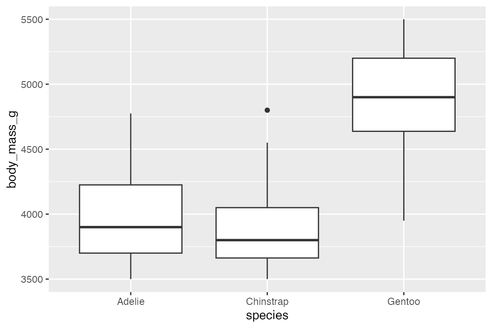
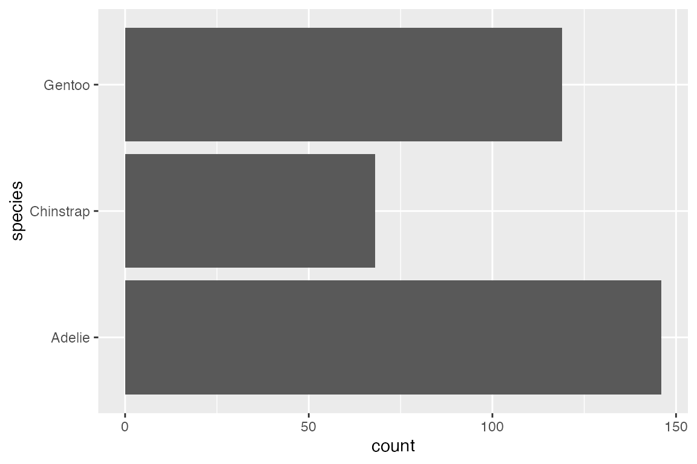

20 Coordinates
Coordinate systems define how x and y are related to each other to produce a 2d plot. The coordinate system, thus, is in charge of drawing the axes and panel backgrounds. “While the scales control the values that appear on the axes, and how they map from data to position, it is the coordinate system which actually draws them.”1 Therefore, coordinate systems are closely related to positional scales, and the topics discussed here are also explained in the notes on Positional scales.
20.1 Resources
20.2 Plot limits
See Section 17.6 for more on the differences of using scale_x/y_*() or coord_cartesian() to set plot limits.
20.2.1 Zooming
Use coord_cartesian(xlim, ylim) to zoom in on a plot.
For zooming in on data in a plot—making the axes limits smaller than the data—it is preferable to use coord_cartesian() instead of scale_x/y_*(). scale_x/y_*() subsets the data, turning all of the data outside the limits into NA. coord_cartesian() draws the same plot but with more confined bounds. The difference is clear with a box plot.
# Zoomed plot
penguins |>
ggplot(aes(x = species,
y = body_mass_g)) +
geom_boxplot() +
coord_cartesian(
ylim = c(3500, 5500))
# Filtered plot
penguins |>
ggplot(aes(x = species,
y = body_mass_g)) +
geom_boxplot() +
scale_y_continuous(
limits = c(3500, 5500))
20.2.2 Padding
The expand and clip arguments of coord_cartesian() are useful to eliminate padding of the data. To alter the padding or eliminate it for one axis, scale_x/y_*(expand) is preferable. You need to be careful in using clip = "off" because it can lead to plotted data outside the panel region. However, it is useful to prevent points from being clipped on the limits of the plot.
For more complex adjustment of padding with scale_x/y_*(), see Section 17.6.2.3.
penguins |>
ggplot(aes(x = flipper_length_mm,
y = body_mass_g)) +
geom_point(aes(color = species)) +
coord_cartesian(expand = FALSE,
clip = "off") +
theme(legend.position = "none")
20.3 Linear coordinate systems
20.3.1 Flipped coords
coord_flip() is often used with bar plots to make them sideways. Alternatively, this can also be done by placing the variable to be counted on the y axis. coord_flip() is more important when fitting a model, which assumes the data is y ~ x.
penguins |>
ggplot(aes(x = species)) +
geom_bar() +
coord_flip()
20.3.2 Fixed coords
coord_fixed() fixes the ratio of length on the x and y axes using the ratio argument. The aspect ratio will also be set to ensure that the mapping is maintained regardless of the shape of the output device
20.4 Circular coordinate system
With coord_polar() x and y are transformed into angle (theta) and radius. Rectangles become arcs. This is shown in the below plots. The expansion of the x axis moves the starting point out from the center, while the expansion of the y axis ensures that the largest bar does not become a closed donut. See the lollipop plot example from Cédric Scherer, Graphic Design with ggplot2 at RStudio conf 2022 for a more complex example.
penguins |>
ggplot(aes(x = species, fill = species)) +
geom_bar() +
scale_x_discrete(expand = expansion(mult = c(0.5, 0))) +
scale_y_continuous(expand = expansion(add = c(0, 10))) +
coord_polar(theta = "y")